Previous slide Next slide Toggle fullscreen Open presenter view
CEN429 Secure Programming · Week 9
Advanced Obfuscation and Diversification
CEN429 Secure Programming — Week 9
Asst. Prof. Dr. Uğur CORUH · 13.11.2026
RTEU Computer Engineering · 2026-2027 Fall
CEN429 Secure Programming · Week 9
Today's Plan (3 Hours)
Hour
Section
Topic
1
1–2
Why is obfuscation a rule? · MATE · taxonomy · rule template
2
3
Control-flow rules (K-01…K-06)
3
4–6
Data rules · virtualisation/dynamic · diversification · measurement
Learning outcome (LO.3): write obfuscation as a security rule · state each technique's cost and limit · measure a protection and justify it
RTEU Computer Engineering · 2026-2027 Fall
CEN429 Secure Programming · Week 9
What We Bring from Earlier Weeks
The white-box / MATE attacker model — the threat model where whoever holds the device is also the attacker (Week 1) Debugger — a tool that runs a program step by step and shows variables (gdb, lldb); we saw its run-time detection in the RASP context (Week 6) Entropy — a measure of how disordered a data's bytes look; we saw it in detecting encrypted/packed content and in random number generation (Weeks 2, 3) Compiler flags, strings and the symbol table — compiler options and the tools that list a binary's readable text/name list; the entry-level steps of obfuscation (Week 4) Decompilation — turning a binary/bytecode back into something close to readable code; we saw it on JVM bytecode (Week 5) XOR — 1 if the two bits differ, 0 if they match; a^b^b=a undoes itself; we decoded it by hand in Java string obfuscation (Week 5) Logging — the informational messages a program writes while running; if sensitive information ends up in a log, the attacker reads it (Week 2)
This week: we use these tools and concepts at an advanced level and in a measurable way.
RTEU Computer Engineering · 2026-2027 Fall
CEN429 Secure Programming · Week 9
This Week's Concepts
Each term is defined once, where it first appears in the body; here we only mark where .
Concept
Where
Obfuscation as a security rule, MATE
Section 1
Obfuscation taxonomy (five families)
Section 2
The "protection rule" template (protects what/cost/limit/measurement)
Section 2
Control-flow rules (K-01–K-06)
Section 3
Data obfuscation rules (K-07–K-09)
Section 4
Whole-program rules (K-10–K-12)
Section 4
Diversification
Section 5
Obfuscation's four metrics (potency/resilience/stealth/cost)
Section 5
Deobfuscation (the other side's tools)
Section 5
Its place in layered defence, project S9
Section 6
RTEU Computer Engineering · 2026-2027 Fall
CEN429 Secure Programming · Week 9
What Is Source Code?
The human-readable program text that you write (e.g., a C file).
Example: int topla(int a, int b) { return a + b; }
Source code is compiled and turned into the form the machine runs.
RTEU Computer Engineering · 2026-2027 Fall
CEN429 Secure Programming · Week 9
Compiler and Binary
Compiler: the program that translates source code into machine code (gcc, clang).Binary: the result of compilation; the file the computer runs directly (.exe, .so).
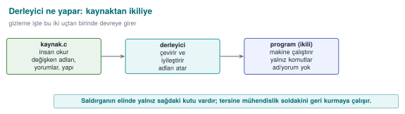
RTEU Computer Engineering · 2026-2027 Fall
CEN429 Secure Programming · Week 9
Machine Code and Assembly
Machine code: the numeric instructions the processor understands.Assembly: a somewhat more human-readable form of machine code (mov, cmp, jmp).
This is what you see when you open a binary.
RTEU Computer Engineering · 2026-2027 Fall
CEN429 Secure Programming · Week 9
What Is Reverse Engineering?
Reverse engineering: looking at a binary and trying to work out what the program does .
This is the attacker's basic job.
RTEU Computer Engineering · 2026-2027 Fall
CEN429 Secure Programming · Week 9
Decompiler
Decompiler: a tool that turns a binary back into a form close to readable code.Examples: Ghidra, IDA.
Goal: someone with no access to the source can infer the logic just by looking at the binary.
RTEU Computer Engineering · 2026-2027 Fall
CEN429 Secure Programming · Week 9
Bit, Byte, Hexadecimal
Bit: 0 or 1.Byte: 8 bits.Hexadecimal (hex): written with a 0x prefix; 0x2A = 42.
We will see values like 0x5A in the code; these are just numbers.
RTEU Computer Engineering · 2026-2027 Fall
CEN429 Secure Programming · Week 9
What Is XOR?
XOR (^): 1 if the two bits differ, 0 if they are the same.Property: a ^ b ^ b == a → it undoes itself .
c = a ^ 0x5A ;
a = c ^ 0x5A ;
It is heavily used in obfuscation because it is reversible.
RTEU Computer Engineering · 2026-2027 Fall
CEN429 Secure Programming · Week 9
What Is Entropy (Randomness)?
Entropy: how "random" a piece of data looks.Cryptographic keys look high-entropy (irregular bytes).
If an attacker sees a high-entropy block in a binary, they say "there might be a key here."
RTEU Computer Engineering · 2026-2027 Fall
CEN429 Secure Programming · Week 9
Function, Branch, Condition
Function: a block of code that does one job (erisim_ver).Branch: a fork in the road, like an if.Condition: the expression that decides which way the branch goes.
RTEU Computer Engineering · 2026-2027 Fall
CEN429 Secure Programming · Week 9
Basic Block
Basic block: a sequence of instructions that runs straight through, with no branch.When an if is reached the block ends, and two new blocks begin.
Program = basic blocks wired together.
RTEU Computer Engineering · 2026-2027 Fall
CEN429 Secure Programming · Week 9
Control Flow Graph (CFG)
CFG (Control Flow Graph): a diagram that makes basic blocks its nodes and the transitions between them its edges .It is the program's "road map."
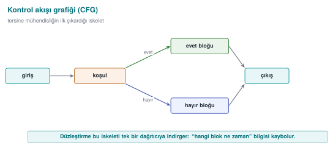
RTEU Computer Engineering · 2026-2027 Fall
CEN429 Secure Programming · Week 9
This Week's Question in One Sentence
I have delivered the program to the user; the attacker now owns it. How do I make it harder
Answer: code obfuscation rules. Let's begin.
RTEU Computer Engineering · 2026-2027 Fall
CEN429 Secure Programming · Week 9
1. Why Is Obfuscation a Rule?
RTEU Computer Engineering · 2026-2027 Fall
CEN429 Secure Programming · Week 9
First, a Question
You have delivered a mobile app to the user.
Whose machine is the code running on now?
Are your server-side security checks still valid here?
How many times can the attacker try?
RTEU Computer Engineering · 2026-2027 Fall
CEN429 Secure Programming · Week 9
MATE: the Attacker at the End
M an-A t-T he-E nd = an attacker who possesses the program itself.
The binary is in their hands
They can read and modify memory
They have a decompiler and a debugger in hand
They can try as many times as they like
This is also called the white-box model (week 1).
RTEU Computer Engineering · 2026-2027 Fall
CEN429 Secure Programming · Week 9
The MATE Attacker Model — Diagram
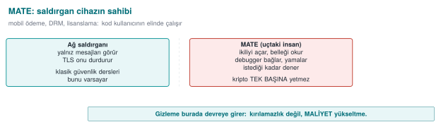
RTEU Computer Engineering · 2026-2027 Fall
CEN429 Secure Programming · Week 9
Black Box ≠ White Box
Black box
White box (MATE)
Sees
Input/output
Everything
Environment
Remote server
The attacker's device
Attempts
Limited
Unlimited
Defence
Crypto, verification
+ obfuscation, RASP, whitebox
Cryptography assumes a black box ; that assumption collapses on delivery.
RTEU Computer Engineering · 2026-2027 Fall
CEN429 Secure Programming · Week 9
A Brief History — Where Does Code Obfuscation Come From?
1976 — Diffie & Hellman: the idea of "incomprehensible but working" (protection through effort )1997 — Collberg et al. taxonomy + potency–resilience–stealth–cost (this course's five families)2001 — Barak et al.: perfect obfuscation is impossible → not "unbreakability" but cost 2002 — Chow et al. whitebox AES (week 11) · 2010s Tigress , O-LLVM (week 14)
Obfuscation is a practical delaying discipline built on top of an impossibility theorem .
RTEU Computer Engineering · 2026-2027 Fall
CEN429 Secure Programming · Week 9
The Honest Truth
An attacker with enough time, skill, and motivation breaks every obfuscation .
Cookbook (Recipe 12.1): anti-tampering is not "unbreakable."
So what is the goal, then?
RTEU Computer Engineering · 2026-2027 Fall
CEN429 Secure Programming · Week 9
The Goal: Make Breaking It Uneconomical
Obfuscation is a tool for raising cost , not for keeping a secret.
Make breaking it expensive
Make automating it harder
Buy time for the other layers
Let's turn these into three rules.
RTEU Computer Engineering · 2026-2027 Fall
CEN429 Secure Programming · Week 9
Rule 1 — Push the Cost Above the Value
The attack must be more expensive than the protected asset.
Protecting a 10 TL secret with 1000 TL of effort: a waste
Protecting a 1000 TL secret with 10 TL of effort: insufficient
First determine the asset's value , then choose the protection.
RTEU Computer Engineering · 2026-2027 Fall
CEN429 Secure Programming · Week 9
Rule 2 — Break Automation
An attack that works on one copy should not work on every copy.
This is called diversification (section 5 of this week)
With tooling in week 14 (Tigress --Seed)
One crack should not open every door.
RTEU Computer Engineering · 2026-2027 Fall
CEN429 Secure Programming · Week 9
Rule 3 — Buy Time for the Other Layers
Obfuscation is not a defence on its own; it is a layer .
RASP (week 6) protects it while it is running
Integrity checking, server-side checks
Holding out until the key/version is renewed is enough
RTEU Computer Engineering · 2026-2027 Fall
CEN429 Secure Programming · Week 9
The Source's Language: Every Countermeasure Is a "Rule"
The technical guide writes every countermeasure under three headings:
Description — what it protectsImplementation — how it is doneExample usage — where
Usually with a compliance ID too (e.g., "sensitive data is never logged in plain text").
We will write it the same way: what it protects · how · cost · limit .
RTEU Computer Engineering · 2026-2027 Fall
CEN429 Secure Programming · Week 9
2. Taxonomy and Rule Template
RTEU Computer Engineering · 2026-2027 Fall
CEN429 Secure Programming · Week 9
What Does Obfuscation Hide?
Collberg's classification: we split obfuscation by what it hides .
There are five families. Let's go through them in order.
RTEU Computer Engineering · 2026-2027 Fall
CEN429 Secure Programming · Week 9
Family 1 — Layout
What does it hide? Names, format, metadata.
Making symbols invisible
Making function/file names meaningless
Stripping logging from the release build
We met this in week 4; this week we go deeper.
RTEU Computer Engineering · 2026-2027 Fall
CEN429 Secure Programming · Week 9
Family 2 — Data
What does it hide? Constants, strings, variables.
String encoding
Constant transforms
Variable splitting/merging
Opaque boolean
→ Section 4 of this week.
RTEU Computer Engineering · 2026-2027 Fall
CEN429 Secure Programming · Week 9
Family 3 — Control Flow
What does it hide? The algorithm's structure.
Control-flow flattening
Opaque predicates
Bogus and dead branches
Random exit
→ Section 3 of this week (coming up shortly).
RTEU Computer Engineering · 2026-2027 Fall
CEN429 Secure Programming · Week 9
Family 4 — Anti-Analysis
What does it hide? The analysis tools' own work.
Structures that mislead a decompiler
Decoding code at runtime
→ Concept this week, RASP in week 6.
RTEU Computer Engineering · 2026-2027 Fall
CEN429 Secure Programming · Week 9
Family 5 — Virtualisation
What does it hide? The machine code itself.
Turning a function into a custom VM's bytecode
→ Concept this week (K-10), with tooling in week 14 (Tigress Virtualize).
RTEU Computer Engineering · 2026-2027 Fall
CEN429 Secure Programming · Week 9
Virtualisation — Diagram
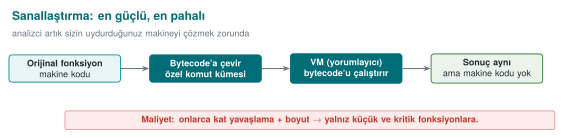
RTEU Computer Engineering · 2026-2027 Fall
CEN429 Secure Programming · Week 9
The Five Families: Summary
Family
Hides
Layout
Name, format
Data
Constant, string, variable
Control flow
Structure
Anti-analysis
Tool's work
Virtualisation
Machine code
Rule: the families are used together , not alone.
RTEU Computer Engineering · 2026-2027 Fall
CEN429 Secure Programming · Week 9
Five Families — Potency ↑ Cost ↑
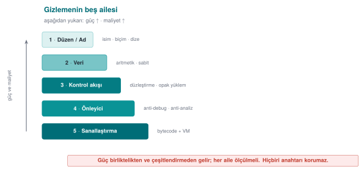
RTEU Computer Engineering · 2026-2027 Fall
CEN429 Secure Programming · Week 9
In the Field: All Together
The native countermeasures listed in a certified product cover this entire map:
symbol hiding · name obfuscation · arithmetic transform · string encoding · opaque boolean · bogus operation · dead branch · flattening · random exit · stripping logging
None of them is strong alone; strength comes from togetherness .
RTEU Computer Engineering · 2026-2027 Fall
CEN429 Secure Programming · Week 9
What Obfuscation GIVES
A delay against static analysis (strings, symbols, decompilation)
Resistance against automated attack (via diversification)Time for the other layersA measurable increase in cost
RTEU Computer Engineering · 2026-2027 Fall
CEN429 Secure Programming · Week 9
What Obfuscation DOES NOT Give
The secrecy of a secret → that is cryptography's job
Protection against reading memory → RASP, whiteboxPermanent security → there is no such thing as "unbreakable"Free protection → every obfuscation comes with a cost
RTEU Computer Engineering · 2026-2027 Fall
CEN429 Secure Programming · Week 9
What Obfuscation Gives and Does Not Give — Diagram
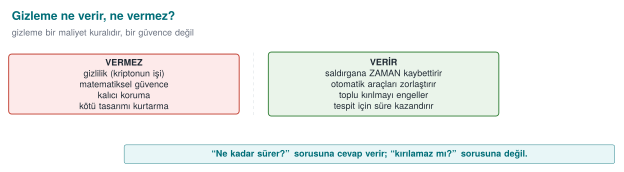
RTEU Computer Engineering · 2026-2027 Fall
CEN429 Secure Programming · Week 9
⚠️ The Most Common Mistake
Mistaking obfuscation for storing a key .
An embedded/hidden key is still there
The program has to use it while it runs → it is exposed in memory
The decoding logic is inside too
Secrecy is cryptography's job, not obfuscation's. (week 3)
RTEU Computer Engineering · 2026-2027 Fall
CEN429 Secure Programming · Week 9
The "Protection Rule" Template
KURAL K-xx: <teknik>
Neyi korur? : hangi varlık / kod bölümü
Hangi tehdit?: statik / dinamik / otomatik / kurcalama
Nasıl? : bir cümle (kavram)
Maliyet : boyut, hız, bakım, hata ayıklama
Sınır : neyi korumaz
Ölçüm : etkinlik nasıl doğrulanır
RTEU Computer Engineering · 2026-2027 Fall
CEN429 Secure Programming · Week 9
Why Is the "Measurement" Line Required?
Obfuscation is not "present/absent."
The evaluator (week 13) asks how much each layer delays the attack
Protection without measurement = a claim , not evidence
In the project you will write S9 using this template.
RTEU Computer Engineering · 2026-2027 Fall
CEN429 Secure Programming · Week 9
Four Metrics — Diagram
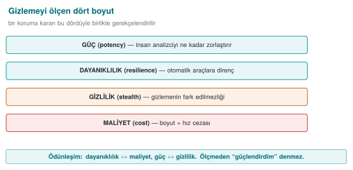
RTEU Computer Engineering · 2026-2027 Fall
CEN429 Secure Programming · Week 9
Section 2 — Quick Check
How does the MATE attacker differ from a black box?
What were obfuscation's three rules?
Does obfuscation protect a key? Why?
RTEU Computer Engineering · 2026-2027 Fall
CEN429 Secure Programming · Week 9
Section 2 — Answers
MATE possesses the program (the code/memory is theirs, unlimited attempts); a black box only sees input/output.Push the cost above the value · break automation (diversify) · buy time for the other layers.
No. The key is exposed in memory while running and the decoding logic is inside; secrecy is cryptography's job.
RTEU Computer Engineering · 2026-2027 Fall
CEN429 Secure Programming · Week 9
3. Control-Flow Rules
RTEU Computer Engineering · 2026-2027 Fall
CEN429 Secure Programming · Week 9
The Purpose of This Section
We treat the CFG (already defined in the background section) as this section's skeleton; the attacker's first job is to extract that skeleton.
In week 4 we introduced flattening.
In this section we add the rules that strengthen it:
K-01 opaque predicate · K-02 arithmetic encoding · K-03 bogus/dead · K-04 flattening (in depth) · K-05 random exit · K-06 call hiding
All examples are synthetic , built around a single check: erisim_ver.
RTEU Computer Engineering · 2026-2027 Fall
CEN429 Secure Programming · Week 9
K-01 · Opaque Predicates and Loops
RTEU Computer Engineering · 2026-2027 Fall
CEN429 Secure Programming · Week 9
Opaque Predicate — Diagram
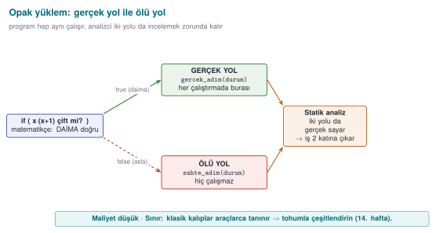
RTEU Computer Engineering · 2026-2027 Fall
CEN429 Secure Programming · Week 9
K-01 · What Does It Protect?
Which condition a branch is taken underHow many times a loop runs
Idea: branch on an expression whose value the programmer knows but the tool cannot easily resolve.
RTEU Computer Engineering · 2026-2027 Fall
CEN429 Secure Programming · Week 9
K-01 · Opaque Predicate Example
static int opak_dogru (unsigned x) {
return ((x * (x + 1 )) & 1u ) == 0 ;
}
The programmer knows: it is always true . Static analysis cannot easily prove this.
RTEU Computer Engineering · 2026-2027 Fall
CEN429 Secure Programming · Week 9
K-01 · How Is It Used?
if (opak_dogru(sayac)) {
durum = gercek_adim(durum);
} else {
durum = sahte_adim(durum);
}
The analyst thinks both paths are "real"; they spend their time on the fake path.
RTEU Computer Engineering · 2026-2027 Fall
CEN429 Secure Programming · Week 9
K-01 · Opaque Loop
The guide makes loops a separate rule:
for/while are never shown directly
Hidden inside flattening
The body is split into small blocks
Iteration is driven by a state variable
The information "this loop runs N times" cannot be read off the CFG.
RTEU Computer Engineering · 2026-2027 Fall
CEN429 Secure Programming · Week 9
K-01 · Cost and Limit
Cost: low–medium (extra arithmetic/branch)Limit: well-known opaque predicate patterns are recognised automaticallyCountermeasure: diversify (section 5)Measurement: basic block count before/after
RTEU Computer Engineering · 2026-2027 Fall
CEN429 Secure Programming · Week 9
K-02 · Arithmetic Encoding
RTEU Computer Engineering · 2026-2027 Fall
CEN429 Secure Programming · Week 9
K-02 · What Does It Protect?
Constants and simple computations.
It hides directly readable hints like "this number is 0x1F, this operation is an XOR."
RTEU Computer Engineering · 2026-2027 Fall
CEN429 Secure Programming · Week 9
K-02 · Equivalent Expressions (MBA)
Replace an operation with an equivalent one that produces the same result but looks complex:
a + b ≡ (a ^ b) + 2*(a & b)
x * 2 ≡ x << 1
Same result, complex appearance. (MBA = mixed boolean-arithmetic)
RTEU Computer Engineering · 2026-2027 Fall
CEN429 Secure Programming · Week 9
K-02 · Hide the Constant
static uint8_t esik (void ) {
uint8_t a = 0x37 , b = 0x1D ;
return (uint8_t )(a ^ b);
}
Searching the binary for 0x2A returns nothing.
RTEU Computer Engineering · 2026-2027 Fall
CEN429 Secure Programming · Week 9
K-02 · Cost and Limit
Cost: lowLimit: MBA simplifiers (arybo/msynth) can undo many expressionsRule: weak on its own → combine it with control flowMeasurement: a byte/strings search for the constant should return nothing
RTEU Computer Engineering · 2026-2027 Fall
CEN429 Secure Programming · Week 9
K-03 · Bogus Operations and Dead Branches
RTEU Computer Engineering · 2026-2027 Fall
CEN429 Secure Programming · Week 9
Bogus Operation ≠ Dead Branch — Diagram
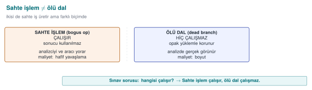
RTEU Computer Engineering · 2026-2027 Fall
CEN429 Secure Programming · Week 9
K-03 · The Two Are Different!
The guide makes these separate rules. The difference is critical:
Bogus operation: runs, does not change the resultDead branch: never runs (protected by an opaque predicate)
RTEU Computer Engineering · 2026-2027 Fall
CEN429 Secure Programming · Week 9
K-03 · Comparison
Bogus operation
Dead branch
Does it run?
Yes No
Result
Unchanged
(does not run)
Purpose
Hide the real thing in a crowd
Show a fake path
RTEU Computer Engineering · 2026-2027 Fall
CEN429 Secure Programming · Week 9
K-03 · Bogus Operation Example
crc = crc32_guncelle(crc, veri, n);
crc ^= (sabit ^ sabit);
sabit ^ sabit == 0 → the CRC does not change, but the code gets more crowded.
RTEU Computer Engineering · 2026-2027 Fall
CEN429 Secure Programming · Week 9
K-03 · Dead Branch Example
if (opak_yanlis()) {
sahte_kontrol();
}
The analyst treats this block as "real" and examines it; they waste time.
RTEU Computer Engineering · 2026-2027 Fall
CEN429 Secure Programming · Week 9
K-03 · Cost and Limit
Cost: low (bogus operation) → medium (dead branches grow the CFG)Limit: dead code elimination drops the branch once the opaque predicate protecting it is solvedDependency: depends on the opaque predicate's quality Measurement: time needed to tell dead branches apart from real ones
RTEU Computer Engineering · 2026-2027 Fall
CEN429 Secure Programming · Week 9
K-04 · Control-Flow Flattening
RTEU Computer Engineering · 2026-2027 Fall
CEN429 Secure Programming · Week 9
K-04 · What Does It Protect?
The algorithm's structure :
The natural adjacency of blocks
The information "which block leads to which"
RTEU Computer Engineering · 2026-2027 Fall
CEN429 Secure Programming · Week 9
K-04 · Idea: Vertical → Horizontal
Normal: blocks follow one another (vertical flow)Flattened: all blocks sit in a single switch dispatcher (horizontal)The order can only be read from a state variable
RTEU Computer Engineering · 2026-2027 Fall
CEN429 Secure Programming · Week 9
K-04 · Template
int durum = BASLA;
for (;;) switch (durum) {
case BASLA: durum = ADIM1; break ;
case ADIM1: durum = kosul ? ADIM2 : HATA; break ;
case ADIM2: durum = BITIR; break ;
case HATA: return RED;
case BITIR: return IZIN;
default : return RED;
}
RTEU Computer Engineering · 2026-2027 Fall
CEN429 Secure Programming · Week 9
K-04 · Weak on Its Own
We said back in week 4: an experienced analyst can solve this template fairly quickly.
Strength comes from reinforcements. In order:
RTEU Computer Engineering · 2026-2027 Fall
CEN429 Secure Programming · Week 9
K-04 · Reinforcement 1 — State Values (K-02)
Scattered, arithmetically produced values instead of case 1, 2, 3
The sequence is invisible
Which step follows which cannot be read
RTEU Computer Engineering · 2026-2027 Fall
CEN429 Secure Programming · Week 9
K-04 · Reinforcement 2 — Bogus/Dead (K-03)
Bogus cases are added
Telling which case is real becomes harder
RTEU Computer Engineering · 2026-2027 Fall
CEN429 Secure Programming · Week 9
K-04 · Reinforcement 3 — Random Exit (K-05)
Errors exit through the default branch with an unpredictable state
Where the failure happened cannot be read
RTEU Computer Engineering · 2026-2027 Fall
CEN429 Secure Programming · Week 9
K-04 · Reinforcement 4 — Opaque Transitions (K-01)
case transitions depend on opaque conditions , not fixed valuesStatic tracing becomes even harder
RTEU Computer Engineering · 2026-2027 Fall
CEN429 Secure Programming · Week 9
K-04 · Cost and Limit
Cost: medium–high (block/branch count grows a lot, performance drops)Limit: flattening alone → can be undone with symbolic execution (section 5)Strength: comes from the reinforcementsMeasurement: CFG node/edge count, tracing time
RTEU Computer Engineering · 2026-2027 Fall
CEN429 Secure Programming · Week 9
K-05 · Random Exit
RTEU Computer Engineering · 2026-2027 Fall
CEN429 Secure Programming · Week 9
K-05 · What Does It Protect?
Where a check fails.
The attacker typically:
Finds the "failure branch"
Turns it into the "success branch"
RTEU Computer Engineering · 2026-2027 Fall
CEN429 Secure Programming · Week 9
K-05 · How?
if (!imza_gecerli(p)) {
durum = kararsiz_deger();
break ;
}
There is no direct return RED; the state goes to an unpredictable value.
RTEU Computer Engineering · 2026-2027 Fall
CEN429 Secure Programming · Week 9
K-05 · Success Should Exit the Same Way Too
A successful exit uses the same method too
So success and failure look alike in the flow
The analyst cannot say "this is the accept branch"
RTEU Computer Engineering · 2026-2027 Fall
CEN429 Secure Programming · Week 9
K-05 · Cost and Limit
Cost: lowLimit: not meaningful on its own, only together with flatteningGoal: a single-byte patch should not be enough to bypass the checkMeasurement: time needed for a "find and flip the failure branch" attack
RTEU Computer Engineering · 2026-2027 Fall
CEN429 Secure Programming · Week 9
K-06 · Call and Dependency Hiding
RTEU Computer Engineering · 2026-2027 Fall
CEN429 Secure Programming · Week 9
K-06 · What Does It Protect?
Hints like: "this function calls memcmp, so it must be doing a comparison."
Standard library calls tell the attacker what you are doing.
RTEU Computer Engineering · 2026-2027 Fall
CEN429 Secure Programming · Week 9
K-06 · How?
Your own constant-time esit_mi instead of memcmp on the critical path
No recognisable name appears to the linker
Bogus parameters: add parameters that are never used → the signature becomes misleading
RTEU Computer Engineering · 2026-2027 Fall
CEN429 Secure Programming · Week 9
K-06 · ⚠️ Do Not Break Constant-Timeness
When you write your own comparison, make sure it stays constant-time (week 3).
An early-exit comparison → opens a side channel
Do not create a new hole while adding a protection
RTEU Computer Engineering · 2026-2027 Fall
CEN429 Secure Programming · Week 9
K-06 · Cost and Limit
Cost: low–medium (your own versions need maintenance)Limit: behavioural analysis can still reveal what it does → this is a delay Measurement: count of recognisable library calls in the binary
RTEU Computer Engineering · 2026-2027 Fall
CEN429 Secure Programming · Week 9
Section 3 — Summary
K-01 opaque predicate/loop · K-02 arithmetic encodingK-03 bogus operation ≠ dead branchK-04 flattening (with reinforcements)K-05 random exit · K-06 call hiding
None is sufficient on its own; together and measured .
RTEU Computer Engineering · 2026-2027 Fall
CEN429 Secure Programming · Week 9
Section 3 — Quick Check
What is the difference between a bogus operation and a dead branch?
What are the 4 rules that strengthen flattening?
Which attack does random exit make harder?
RTEU Computer Engineering · 2026-2027 Fall
CEN429 Secure Programming · Week 9
Section 3 — Answers
A bogus operation runs but does not change the result; a dead branch , protected by an opaque predicate, never runs at all.
Hide the state values (K-02) · bogus/dead blocks (K-03) · random exit (K-05) · opaque predicate transitions (K-01).
The "find the failure branch and flip it to success" attack; a single-byte patch is no longer enough .
RTEU Computer Engineering · 2026-2027 Fall
CEN429 Secure Programming · Week 9
4. Data and Whole-Program Rules
RTEU Computer Engineering · 2026-2027 Fall
CEN429 Secure Programming · Week 9
Data Obfuscation Rules K-07–K-09 — Diagram
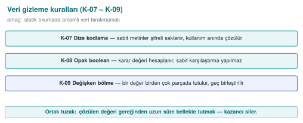
RTEU Computer Engineering · 2026-2027 Fall
CEN429 Secure Programming · Week 9
Control Flow ≠ Data
Control flow (section 3): hides the algorithm's structure Data obfuscation (this section): hides the values the program processes
Strings, constants, tables, variables.
RTEU Computer Engineering · 2026-2027 Fall
CEN429 Secure Programming · Week 9
K-07 · String Encoding
RTEU Computer Engineering · 2026-2027 Fall
CEN429 Secure Programming · Week 9
K-07 · What Does It Protect?
The readable text inside a binary.
The cheapest attack step: strings.
"Lisans gecersiz" or a URL → tells the attacker exactly where to look.
RTEU Computer Engineering · 2026-2027 Fall
CEN429 Secure Programming · Week 9
K-07 · Idea
Sensitive strings are encoded before compilation (e.g., XOR)
They stay encoded in the binary
Decoded at the moment of use
Wiped the instant the job is done
RTEU Computer Engineering · 2026-2027 Fall
CEN429 Secure Programming · Week 9
K-07 · Example (Synthetic)
static const uint8_t GIZLI[] = {0x3B ,0x2A ,0x2E ,0x2E ,0x2D };
void kullan (void ) {
char tmp[sizeof GIZLI];
for (size_t i=0 ;i<sizeof GIZLI;i++)
tmp[i] = GIZLI[i] ^ 0x5A ;
isle(tmp, sizeof GIZLI);
memset_s_benzeri(tmp, sizeof tmp);
}
RTEU Computer Engineering · 2026-2027 Fall
CEN429 Secure Programming · Week 9
K-07 · ⚠️ Critical Limit
The decoded string is exposed in memory while running
The decoding key is also in the binary
This is a static-scan countermeasure
In the field: the decoding key is split and distributed , and the decoding function gets extra checks.
RTEU Computer Engineering · 2026-2027 Fall
CEN429 Secure Programming · Week 9
K-07 · String Obfuscation ≠ Key Storage
Again: string obfuscation stops strings, it does not protect a key .
For the key → whitebox (week 11) or hardware
Measurement: the sensitive string must not be found in strings output
RTEU Computer Engineering · 2026-2027 Fall
CEN429 Secure Programming · Week 9
K-08 · Opaque Boolean
RTEU Computer Engineering · 2026-2027 Fall
CEN429 Secure Programming · Week 9
K-08 · Problem: Plain 0/1 Is Dangerous
Returning a check's result as a plain 0/1:
The attacker flips a single byte
"Failure" becomes "success"
RTEU Computer Engineering · 2026-2027 Fall
CEN429 Secure Programming · Week 9
K-08 · Idea
Tie the true/false value to:
Multiple values In a way a single-byte patch cannot flip
Functions return an opaque return code instead of a plain boolean.
RTEU Computer Engineering · 2026-2027 Fall
CEN429 Secure Programming · Week 9
K-08 · Example (Concept)
typedef struct {uint32_t a, b; } Karar;
static Karar izin_ver (void ) {
return (Karar){ 0xA3C1 u, 0x5C3E u };
}
static int karar_izin_mi (Karar k) {
return (k.a ^ k.b) == 0xFFFF u;
}
The calling side verifies both fields .
RTEU Computer Engineering · 2026-2027 Fall
CEN429 Secure Programming · Week 9
K-08 · Cost and Limit
Cost: lowLimit: solvable with enough scrutinyGoal: block a single-byte patch and crude branch-flippingMeasurement: independent points > 1 needed to flip the result
RTEU Computer Engineering · 2026-2027 Fall
CEN429 Secure Programming · Week 9
K-09 · Variable Splitting and Restructuring
RTEU Computer Engineering · 2026-2027 Fall
CEN429 Secure Programming · Week 9
K-09 · What Does It Protect?
The recognisable footprint of a sensitive variable in memory.
Patterns like "a 32-byte block = an AES key" point the attacker straight at it.
RTEU Computer Engineering · 2026-2027 Fall
CEN429 Secure Programming · Week 9
K-09 · How?
Split a variable (produce a 32-bit value from two 16-bit shares)Merge several variables into a single wordRearrange arrays
Change buffer size/order/layout
Fill with random values after use
RTEU Computer Engineering · 2026-2027 Fall
CEN429 Secure Programming · Week 9
K-09 · Cost and Limit
Cost: low–mediumLimit: only slows down static/pattern analysisMeasurement: time needed to recognise the sensitive buffer from the pattern
RTEU Computer Engineering · 2026-2027 Fall
CEN429 Secure Programming · Week 9
Whole-Program Rules: K-10, K-11, K-12
RTEU Computer Engineering · 2026-2027 Fall
CEN429 Secure Programming · Week 9
K-10 · Virtualisation (Concept)
What does it protect? A function's machine code .
How? The function → a custom VM's bytecode ; the bytecode and a small interpreter are embedded in the binary.
The attacker does not see familiar code — they see a custom instruction set they must first solve.
RTEU Computer Engineering · 2026-2027 Fall
CEN429 Secure Programming · Week 9
K-10 · Cost and Limit
Cost: high (interpreted code is slow; maintenance is expensive)Use: only the most critical, small, rarely-changing functionsLimit: once the VM is solved once, everything it protects opens up; if not diversified, every copy is identicalWeek 14: Tigress Virtualize
RTEU Computer Engineering · 2026-2027 Fall
CEN429 Secure Programming · Week 9
K-11 · Compiler-Based (O-LLVM)
What does it protect? The rules above, applied through a compiler pass , not by hand.
LLVM-based obfuscators: flattening, bogus control flow, instruction-substitution passes
The source stays readable ; protection is a compile option
A different seed per build → easy diversification
RTEU Computer Engineering · 2026-2027 Fall
CEN429 Secure Programming · Week 9
K-11 · Cost and Limit
Cost: medium (depends on the passes selected)Limit: known pass patterns are recognisable; stay current with the tool's versionMeasurement: the difference between binaries produced with different seeds
RTEU Computer Engineering · 2026-2027 Fall
CEN429 Secure Programming · Week 9
K-12 · Dynamic Encryption (Concept)
What does it protect? The most sensitive code sections, by keeping them encrypted in the binary.
How? The section stays encrypted → decoded only right when it is about to run → then re-encrypted/wiped.
RTEU Computer Engineering · 2026-2027 Fall
CEN429 Secure Programming · Week 9
K-12 · ⚠️ Risk
Directly conflicts with OS memory protections (DEP/NX, W^X )
Done wrong, it both crashes and opens a new hole
The code sits exposed in memory for a moment while running → a memory dump can catch it
RTEU Computer Engineering · 2026-2027 Fall
CEN429 Secure Programming · Week 9
K-12 · Rule
If adding one protection turns off another, measure the net gain and record the trade-off.
In practice it is used very selectively, on small sections.
RTEU Computer Engineering · 2026-2027 Fall
CEN429 Secure Programming · Week 9
The Java/Managed Side (from Week 5)
This week's rules are for native (C/C++)
The managed-language equivalent: ProGuard/R8 name obfuscation + dead code elimination + shrinking
APIs reached via -keep and reflection
RTEU Computer Engineering · 2026-2027 Fall
CEN429 Secure Programming · Week 9
The Two Sides Work Together
The Java side is obfuscated with R8
The native side, with this week's rules
Cross-check: native verifies Java's integrity, Java verifies native's (week 6, RASP)
RTEU Computer Engineering · 2026-2027 Fall
CEN429 Secure Programming · Week 9
Section 4 — Summary
K-07 string encoding · K-08 opaque boolean · K-09 variable splittingK-10 virtualisation (expensive) · K-11 compiler-based (O-LLVM) · K-12 dynamic (risky)
Data obfuscation complements control-flow obfuscation.
RTEU Computer Engineering · 2026-2027 Fall
CEN429 Secure Programming · Week 9
Section 4 — Quick Check
Does string obfuscation protect the key?
Why does an opaque boolean make a single-byte patch harder?
What are virtualisation's two biggest costs?
RTEU Computer Engineering · 2026-2027 Fall
CEN429 Secure Programming · Week 9
Section 4 — Answers
No. The decoded string is exposed in memory; the decoding key is inside; it only stops static (strings) scanning.The result depends on multiple values; flipping it requires changing >1 independent points .
High performance cost (tens of times slower) and high maintenance cost; that is why it is used only on small/critical functions.
RTEU Computer Engineering · 2026-2027 Fall
CEN429 Secure Programming · Week 9
5. Diversification and Measurement
RTEU Computer Engineering · 2026-2027 Fall
CEN429 Secure Programming · Week 9
Diversification — Diagram
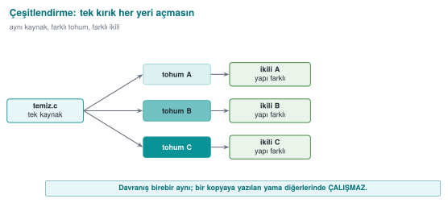
RTEU Computer Engineering · 2026-2027 Fall
CEN429 Secure Programming · Week 9
Diversification: Recall Rule 2
An attack that works on one copy should not work on every copy.
If the attacker can crack one copy and distribute the patch/script to everyone , one crack opens every door.
RTEU Computer Engineering · 2026-2027 Fall
CEN429 Secure Programming · Week 9
What Is Diversification?
Producing binaries from the same source that are behaviourally equivalent, structurally different .
Opaque predicates, bogus blocks, state values change from copy to copy.
RTEU Computer Engineering · 2026-2027 Fall
CEN429 Secure Programming · Week 9
Two Kinds of Diversification
In space: every build/distribution gets a different seed
An attack written for one copy does not work on another
In time: every release gets a new arrangement
An attack written for the old release breaks in the new one
Works together with key/version renewal (week 10).
RTEU Computer Engineering · 2026-2027 Fall
CEN429 Secure Programming · Week 9
What Does Diversification Prevent?
It does not raise obfuscation's potency (a single copy can still be cracked)
But it prevents scaling
Week 14: with tooling, via Tigress --Seed, RandomFuns.
RTEU Computer Engineering · 2026-2027 Fall
CEN429 Secure Programming · Week 9
Diversification Effectiveness: a Simple Metric
Compile the same source with two different seeds
Measure the byte difference of the protected functions
The higher the difference, the lower the odds that an attack on one works on the other
Write this metric into S9.
RTEU Computer Engineering · 2026-2027 Fall
CEN429 Secure Programming · Week 9
Measuring Obfuscation
RTEU Computer Engineering · 2026-2027 Fall
CEN429 Secure Programming · Week 9
Why Measure?
To defend a protection decision.
Collberg's framework: four dimensions.
These four are the foundation of week 13's attack potential scoring.
RTEU Computer Engineering · 2026-2027 Fall
CEN429 Secure Programming · Week 9
Metric 1 — Potency
Question: how incomprehensible is it to a human?
How: complexity metrics — CFG node/edge count, cyclomatic complexity, nesting depth (before/after).
RTEU Computer Engineering · 2026-2027 Fall
CEN429 Secure Programming · Week 9
Metric 2 — Resilience
Question: how much does it withstand an automated tool?
How: how long/successfully a deobfuscation tool (symbolic execution, a simplifier) takes to undo the protection.
RTEU Computer Engineering · 2026-2027 Fall
CEN429 Secure Programming · Week 9
Metric 3 — Stealth
Question: does the obfuscation give itself away?
How: is obfuscated code statistically distinguishable from normal code?
If it is distinguishable, the attacker knows where to look.
RTEU Computer Engineering · 2026-2027 Fall
CEN429 Secure Programming · Week 9
Metric 4 — Cost
Question: how much does it cost us?
How: size increase, runtime, memory, maintenance, debugging difficulty.
RTEU Computer Engineering · 2026-2027 Fall
CEN429 Secure Programming · Week 9
Before Flattening (Concept)
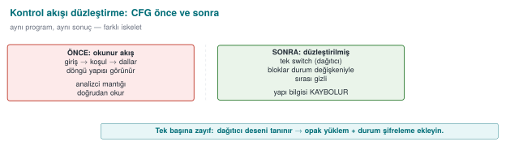
Few nodes, readable flow.
RTEU Computer Engineering · 2026-2027 Fall
CEN429 Secure Programming · Week 9
After Flattening (Concept)
Many nodes, a single hub; "which block comes next" cannot be read.
RTEU Computer Engineering · 2026-2027 Fall
CEN429 Secure Programming · Week 9
Potency Measurement Example
Metric
Before
After
Basic blocks
5
34
Edges
6
60
Cyclomatic complexity
3
28
You take these numbers from the decompiler and write them into S9.
RTEU Computer Engineering · 2026-2027 Fall
CEN429 Secure Programming · Week 9
Cost Measurement Example
size ./program_temiz ./program_gizli
Metric
Before
After
Size
100 KB
128 KB
Runtime
1.0×
1.7×
RTEU Computer Engineering · 2026-2027 Fall
CEN429 Secure Programming · Week 9
Interpreting the Measurement
Potency ↑ (34 blocks) and cost ↑ (28% size, 1.7× time)
This trade-off is expected
Decision: is the gain acceptable given the asset's value?
Do not say "strong"; show these numbers .
RTEU Computer Engineering · 2026-2027 Fall
CEN429 Secure Programming · Week 9
The Four Metrics Trade Off
Raising
Result
Potency ↑ / resilience ↑
Cost ↑
Complexity ↑
Stealth ↓ (draws more attention)
Good decision: balance the four against the value of the asset .
RTEU Computer Engineering · 2026-2027 Fall
CEN429 Secure Programming · Week 9
Decision Rule (Write into S9)
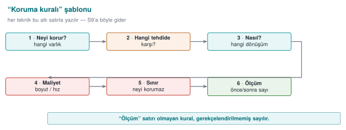
RTEU Computer Engineering · 2026-2027 Fall
CEN429 Secure Programming · Week 9
Deobfuscation and Resilience
RTEU Computer Engineering · 2026-2027 Fall
CEN429 Secure Programming · Week 9
To measure resilience correctly.
We learn these to test our own defence — not to attack.
RTEU Computer Engineering · 2026-2027 Fall
CEN429 Secure Programming · Week 9
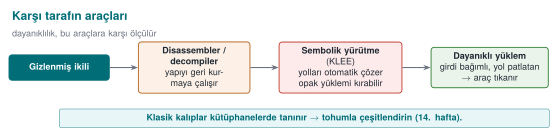
RTEU Computer Engineering · 2026-2027 Fall
CEN429 Secure Programming · Week 9
Program paths are solved as mathematical constraints
Opaque predicates and flattening can be undone this way
Resilience rule: tie opaque predicates to structures that are expensive to solve (factorization, hashing), grow the state space — but measure the cost .
RTEU Computer Engineering · 2026-2027 Fall
CEN429 Secure Programming · Week 9
Rule: do not count arithmetic encoding as a secrecy layer on its own; combine it with control flow.
RTEU Computer Engineering · 2026-2027 Fall
CEN429 Secure Programming · Week 9
Recognises known library/pass patterns
Rule: diversify ; do not rely on a single opaque predicate pattern or a single VM design.
(in space: several patterns/seeds · in time: change the patterns every release)
RTEU Computer Engineering · 2026-2027 Fall
CEN429 Secure Programming · Week 9
Main Takeaway
Banescu et al. (Tigress + KLEE): how much each transform withstands symbolic execution is measured .
Resilience is not a claim , it is a measured quantity.
Do not say "strong"; produce a number : "this transform pipeline did not let this problem, of this size, be solved in this much time, against this tool."
RTEU Computer Engineering · 2026-2027 Fall
CEN429 Secure Programming · Week 9
6. Layered Defence, Project, Closing
RTEU Computer Engineering · 2026-2027 Fall
CEN429 Secure Programming · Week 9
Obfuscation in Layered Defence — Diagram
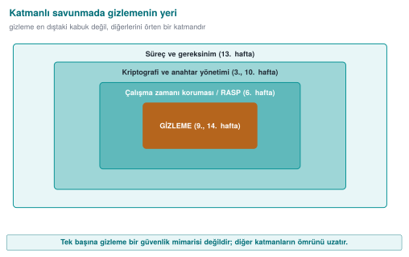
RTEU Computer Engineering · 2026-2027 Fall
CEN429 Secure Programming · Week 9
Obfuscation's Place in Layered Defence
Layer
Week
Relationship
Memory safety/secure compilation
4
Does not replace it; works together
RASP
6
Obfuscation also hides RASP; RASP protects obfuscation while it runs
Whitebox
11
The real protection for the key; obfuscation is the shell
Key renewal
10
Time "until it is renewed"
Certification
12–13
The delay is scored
RTEU Computer Engineering · 2026-2027 Fall
CEN429 Secure Programming · Week 9
An Observation from the Field
In a certified product, the native countermeasures cover all of this week's rules.
But the document notes, next to every one of them: "not strong on its own."
What convinces an evaluator: togetherness + diversification + measured delay.
RTEU Computer Engineering · 2026-2027 Fall
CEN429 Secure Programming · Week 9
End to End: Layer by Layer Protection
RTEU Computer Engineering · 2026-2027 Fall
CEN429 Secure Programming · Week 9
The Goal of This Example
We take a single synthetic check (erisim_ver) and protect it layer by layer .
At every step: what was added · what we gained · what we paid.
RTEU Computer Engineering · 2026-2027 Fall
CEN429 Secure Programming · Week 9
Step 0 · Unprotected Start
int erisim_ver (const char *jeton) {
if (jeton_gecerli(jeton))
return IZIN;
return RED;
}
Weakness: a single branch, strings, bypassed with a single-byte patch.
RTEU Computer Engineering · 2026-2027 Fall
CEN429 Secure Programming · Week 9
Step 0 · What Does the Attacker Do?
strings → IZIN/RED and the related stringsDecompile → a single if, two returns
Flip the failure branch to success (a single byte)
Time: minutes. Skill: low.
RTEU Computer Engineering · 2026-2027 Fall
CEN429 Secure Programming · Week 9
Step 1 · K-07 Encode the String/Constant
static int izin_kodu (void ) { return 0x9E ^ 0x9F ; }
Gain: strings does not find the sensitive textCost: very low
RTEU Computer Engineering · 2026-2027 Fall
CEN429 Secure Programming · Week 9
Step 1 · Measurement
Metric
Step 0
Step 1
Sensitive strings in strings
3
0
Binary size
baseline
+0.5%
The first layer is the cheapest and gives the highest return.
RTEU Computer Engineering · 2026-2027 Fall
CEN429 Secure Programming · Week 9
Step 2 · K-02 Arithmetic Encoding
int esik = ((a ^ b) + 2 *(a & b));
Gain: the constant/computation is not directly readableCost: low
RTEU Computer Engineering · 2026-2027 Fall
CEN429 Secure Programming · Week 9
Step 3 · K-04 Flatten
int durum = BASLA;
for (;;) switch (durum){
case BASLA: durum = kontrol()?ADIM:HATA; break ;
case ADIM: durum = BITIR; break ;
case HATA: return RED;
case BITIR: return IZIN;
}
No single if anymore; the order lives in the state variable.
RTEU Computer Engineering · 2026-2027 Fall
CEN429 Secure Programming · Week 9
Step 3 · What Changed?
The CFG is now "horizontal" — the blocks sit in one switch
Which branch means "success" cannot be read directly
Cost: medium (more blocks/branches, a bit slower)
RTEU Computer Engineering · 2026-2027 Fall
CEN429 Secure Programming · Week 9
Step 4 · K-05 Random Exit
if (!kontrol()) { durum = kararsiz_deger(); break ; }
Where the error was caught cannot be read from the flowA single-byte patch is no longer enough
RTEU Computer Engineering · 2026-2027 Fall
CEN429 Secure Programming · Week 9
Step 5 · K-03 Bogus + Dead
crc ^= (s ^ s);
if (opak_yanlis()) sahte();
The real logic sits in a crowd
Cost: medium
RTEU Computer Engineering · 2026-2027 Fall
CEN429 Secure Programming · Week 9
Step 6 · K-08 Opaque Boolean
Karar k = izin_ver();
if (karar_izin_mi(k)) uygula();
The result is not a plain 0/1 → a single byte cannot flip it
Flipping it requires multiple points
RTEU Computer Engineering · 2026-2027 Fall
CEN429 Secure Programming · Week 9
The Cumulative Effect of the Layers
Step
Rule
Attack time (relative)
Cost
0
—
1×
—
1
K-07
2×
very low
2
K-02
3×
low
3
K-04
8×
medium
4–6
K-05/03/08
20×+
medium
(Relative, for illustration; real values are measured.)
RTEU Computer Engineering · 2026-2027 Fall
CEN429 Secure Programming · Week 9
Step 7 · K-10 Virtualisation?
Only for the most critical function
Cost: high (tens of times slower)Unnecessary for most checks
Rule: do not go this far if the value is low.
RTEU Computer Engineering · 2026-2027 Fall
CEN429 Secure Programming · Week 9
End to End: Takeaway
Every layer made the attack a little more expensive
Every layer added a cost
Where you stop depends on the asset's value and on what you measured
This table is exactly the protection table you will put into S9.
RTEU Computer Engineering · 2026-2027 Fall
CEN429 Secure Programming · Week 9
Project · S9 (Advanced Hardening) — 1
1. Protection table
For 2–3 critical sections (license, key derivation, integrity), fill in the rule template:
what it protects · threat · how · cost · limit · measurement
RTEU Computer Engineering · 2026-2027 Fall
CEN429 Secure Programming · Week 9
Project · S9 — 2
2. Measurement
For at least one technique, before/after:
Count of sensitive strings in strings output
CFG node count
Binary size, the duration of an operation
RTEU Computer Engineering · 2026-2027 Fall
CEN429 Secure Programming · Week 9
Project · S9 — 3, 4
3. Diversification decision: yes/no + justification
4. Limit and remaining risk: what does each protection not protect?
"This string obfuscation does not protect the key; for the key see S8 whitebox/hardware."
Later: S15 (week 14, putting obfuscation into the build pipeline) · S16 (week 12, testing that behaviour is unchanged).
RTEU Computer Engineering · 2026-2027 Fall
CEN429 Secure Programming · Week 9
Through an Evaluator's Eyes
What S9 is graded on is not "I used a lot of techniques."
It is graded on: the justification and measurement of every technique .
An unmeasured protection = a claim. Not evidence.
RTEU Computer Engineering · 2026-2027 Fall
CEN429 Secure Programming · Week 9
Self-Check (1–6)
What is MATE? Why does it leave cryptography insufficient on its own?
"Makes it expensive" — give an asset-value example?
Bogus operation ≠ dead branch?
Why is flattening weak on its own? Name 3 reinforcements?
Which attack does random exit make harder?
Does string obfuscation protect the key?
RTEU Computer Engineering · 2026-2027 Fall
CEN429 Secure Programming · Week 9
Self-Check — Answers (1–6)
MATE = Man-At-The-End: the attacker fully possesses the device (memory, debugger, key). Crypto assumes a secure endpoint; under MATE the key is exposed while running → crypto alone is not enough.Obfuscation does not mean unbreakable; it demands more time/skill/tools for the attack. If breaking 100 TL worth of content requires 10,000 TL of effort, the attacker gives up.
A bogus operation runs but its result is not used (it tires the analyst out); a dead branch , protected by an opaque predicate, never runs .
In flattening, the dispatcher pattern is recognisable and the state variable can be tracked. Reinforcements: opaque predicate · encrypting the state variable · bogus states/blocks + random exit .
It makes pattern-matching and automated-script attacks (expecting the same pattern for the same input) and symbolic execution harder.
No. String/table obfuscation makes static strings scanning harder, but the key is exposed in memory while running → whitebox/HSM is required.
RTEU Computer Engineering · 2026-2027 Fall
CEN429 Secure Programming · Week 9
Self-Check (7–12)
What are virtualisation's two costs?
Which OS protection does self-modifying code conflict with?
The four metrics; which ones trade off?
Does diversification prevent potency or scaling?
Which rules does KLEE break? How is resilience increased?
Fill in the rule template for a section.
RTEU Computer Engineering · 2026-2027 Fall
CEN429 Secure Programming · Week 9
Self-Check — Answers (7–12)
A large performance penalty (the interpreter is slow) + a size increase (VM + bytecode); maintenance/debugging difficulty.
W^X / DEP-NX (writable-and-executable memory is forbidden); writing to a code page needs mprotect/VirtualProtect, which is blocked or suspicious.Potency · resilience · stealth · cost. Potency/resilience ↑ → cost ↑ and stealth ↓ (looks abnormal). Main trade-off: resilience ↔ cost .It prevents scaling — it does not raise a single copy's strength; a crack does not spread to every copy (it breaks reuse of the attack).
KLEE is symbolic execution; it can solve opaque predicates/flattening. Rule: make predicates resistant to symbolic execution (input-dependent, hard to solve); path-exploding structures raise resilience.Example: Rule [flattening] → Goal [hide the flow] → How [Tigress Flatten + opaque predicate] → Measurement [size +X%, speed −Y%, instructions N→M]. The measurement line is required.
RTEU Computer Engineering · 2026-2027 Fall
CEN429 Secure Programming · Week 9
Glossary (1)
Term
Meaning
MATE / white box
An attacker who possesses the program
Opaque predicate
A condition whose value the programmer knows, that the tool struggles to resolve
Flattening
Moving the flow into a single switch
Bogus operation
Code that runs but does not change the result
Dead branch
A branch (protected by an opaque predicate) that never runs
RTEU Computer Engineering · 2026-2027 Fall
CEN429 Secure Programming · Week 9
Glossary (2)
Term
Meaning
Opaque boolean
A true/false value that cannot be flipped with a single byte
Virtualisation
Turning a function into custom VM bytecode
Diversification
Structurally different copies from the same source
Potency/resilience/stealth/cost
The obfuscation metrics
RTEU Computer Engineering · 2026-2027 Fall
CEN429 Secure Programming · Week 9
Sources
Cookbook (Viega & Messier) Chapter 12 — anti-tamperingSecure programming technical guide — native countermeasuresCollberg & Nagra, Surreptitious Software — taxonomy, measurement
Schrittwieser et al. (ACM CSUR 2016) — overview, deobfuscation
Banescu et al. — Tigress + KLEE resilience measurement
Obfuscator-LLVM — compiler-based
RTEU Computer Engineering · 2026-2027 Fall
CEN429 Secure Programming · Week 9
Next Week
Week 10 — Certificates and Cryptographic Methods
We said "obfuscation does not protect the key" this week; week 10 covers choosing keys correctly, their lifecycle, and protecting them with PKI. Rule (this week) → whitebox (week 11) → automation (week 14): these three weeks form one whole.
Obfuscation is not a fortress, it is a delaying layer : it does not give unbreakability, it raises cost ; its strength comes from togetherness , diversification , and being measured .
RTEU Computer Engineering · 2026-2027 Fall
Speaker note: This week we cover advanced code obfuscation rules. Framework: obfuscation does not make something unbreakable, it makes it expensive. We present every technique as a security rule — what it protects, its cost, its limit, how it is measured. Key protection is not obfuscation (week 11).
Speaker note: Today we take the obfuscation introduction from week 4 to an advanced level and add measurement. Main framework: obfuscation does not give unbreakability, it raises cost. We present every technique as a "rule."
Speaker note: Have the students answer first. Answer: on the attacker's machine, server-side checks no longer apply, unlimited attempts.
Speaker note: have them answer first, then open this slide.
Speaker note: have them answer first, then open.
Speaker note: have them answer first, then open; then move to section 5.
Speaker note: This section combines all the rules in a single example; it can be done live on the board.